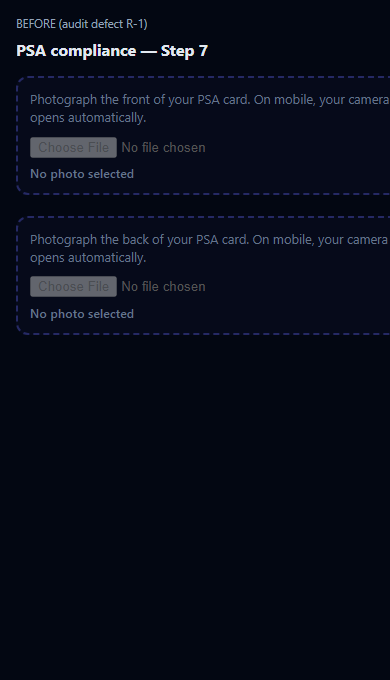
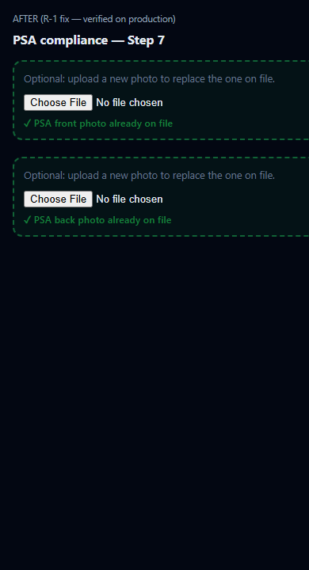
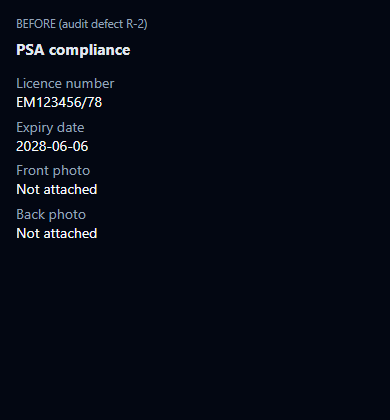
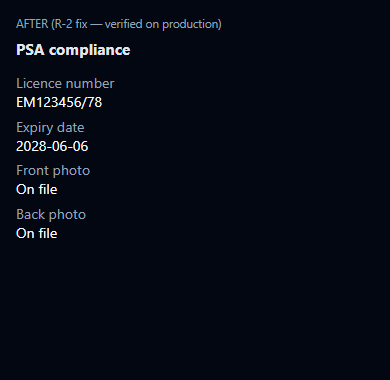

| ID | Before | After |
|---|---|---|
| R-1 | Step 7 showed “No photo selected” when PSA images already on staff profile | “✓ PSA front/back photo already on file” + optional replacement hint; file input remains |
| R-2 | Step 8 review showed “Not attached” for on-file PSA photos | “On file” when data-psa-on-file is set and upload not required |
registration-wizard-returning.js — applyPsaOnFileState() sets data-psa-on-file="1" and clears on lookup miss / start freshregistration-wizard-psa.js — status logic: new file → “Selected: …”; on file → checkmark message; else “No photo selected”registration-wizard.css — .reg-psa-upload--on-file green state (matches ready styling)registration-wizard-review.js — psaPhotoOnFile() reads dataset.psaOnFile + !required → returns “On file”RegistrationWizardReview.render() callsubmit.php, validateRegistrationPsa(), api/registrant-lookup.phprequired logic: still !profile.has_psa_*| File | Change |
|---|---|
assets/js/registration-wizard-returning.js | PSA on-file state + clear on reset |
assets/js/registration-wizard-psa.js | On-file status text + RegistrationWizardPsa.refreshAll() |
assets/js/registration-wizard-review.js | “On file” in psaPhotoStatus() |
assets/css/registration-wizard.css | .reg-psa-upload--on-file styles |
Test email: e2e-wizard-20260606164932@olasentra-e2e.test
Method: Headless Edge CDP on live production after deploy
JSON: storage/reports/returning-registration-audit-latest.json
| Check | Result | Production value |
|---|---|---|
| R-1 front status | PASS | ✓ PSA front photo already on file |
| R-1 back status | PASS | ✓ PSA back photo already on file |
| R-2 review front | PASS | On file |
| R-2 review back | PASS | On file |
| PSA uploads still optional | PASS | front_required=false, back_required=false |
| Step 7 validation | PASS | No re-upload required |
Re-run: php scripts/verify-returning-registration.php



